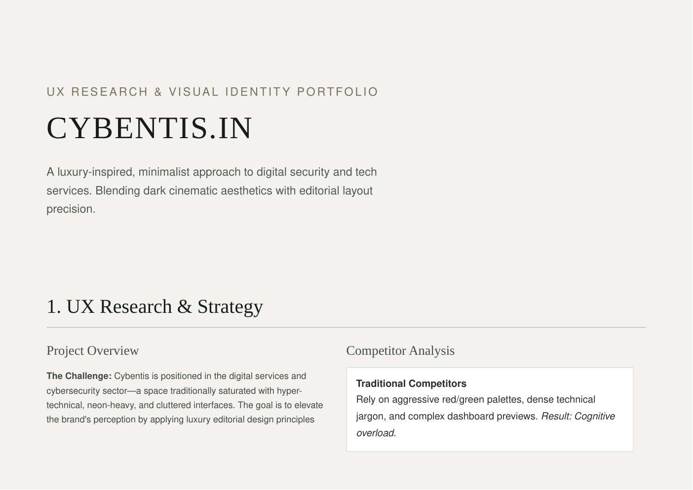
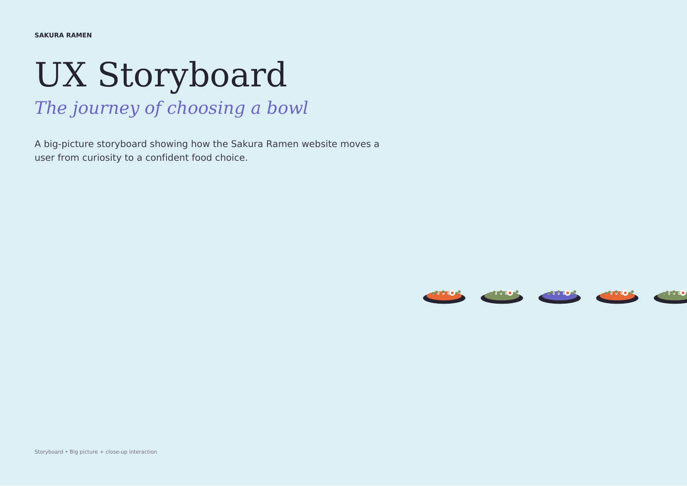
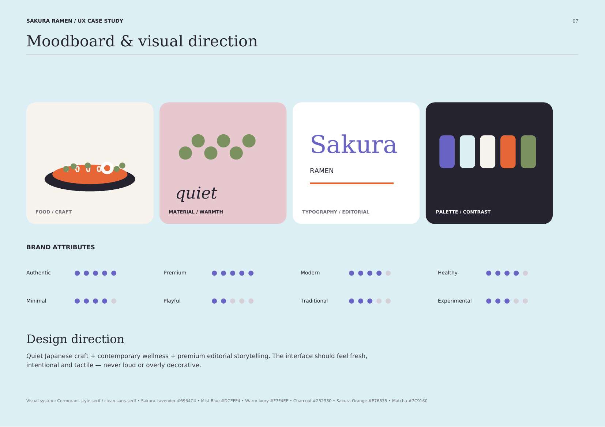

01 / CYBENTIS.INUX + UI + BRAND

↗
Three projects that show how I think: research → interaction → visual system → shipped experience. Plus an app redesign to show product thinking.

Scroll-driven food discovery
Editorial commerce + brand identity
Navigation + recharge + account UX
The portfolio surfaces the real work: live Cybentis, live Sakura Ramen, Puro Heritage, UX research boards, and your Figma prototype.


I use a flexible process rather than decorating a fixed template. The goal is to make every visual decision traceable to a user need or product objective.
Research, competitor scans, personas, journey mapping and problem framing.
Turn observations into clear user needs, priorities and an information architecture.
Wireframes, interaction concepts, visual systems, prototypes and iterations.
High-fidelity UI, motion, responsive build, testing and design handoff.
I’m a MAAC-certified UI/UX designer with hands-on work spanning e-commerce, brand identity, interactive websites and app redesign. My toolkit includes Figma, Adobe tools, Blender and AI-assisted workflows.
I care about the reasoning behind an interface: what the user needs to understand, what should happen next, and how visual language can make that journey feel obvious.